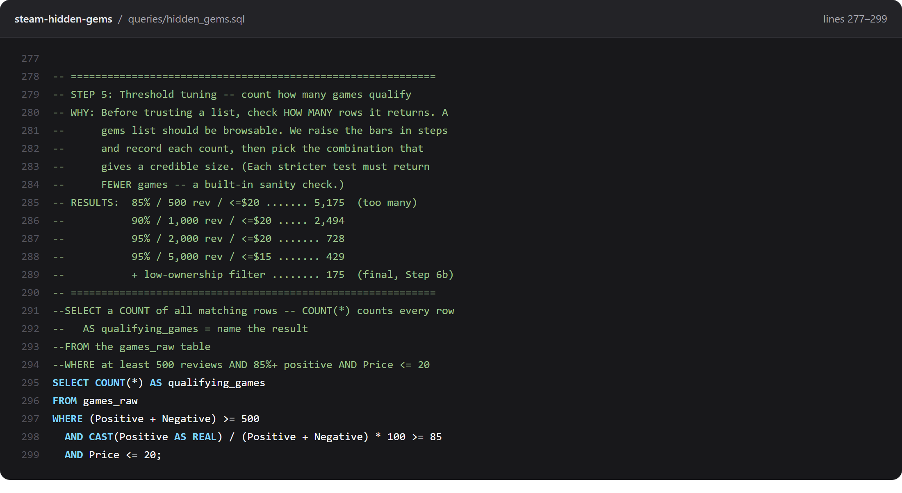
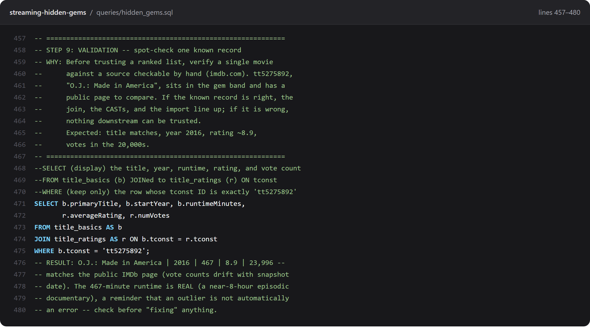
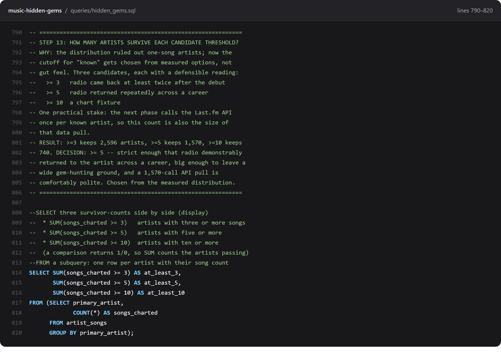

How to Comment SQL So It Teaches
A format for SQL comments that explains why a query exists and lets a beginner read it clause by clause. For the comment marks themselves, see how to comment in SQL.
| Part | Where it goes |
|---|---|
A boxed WHY header | Above the query |
| A read-out-loud block | Under the header |
| Sub-bullets for calculations | Under --SELECT |
| The query, with no comments | Last |
This format comes from three public projects.
Run this once in an empty practice database. The queries on this page use these two made-up tables. They are written for SQLite.
CREATE TABLE games_raw (
Name VARCHAR(40), Positive INT,
Negative INT, Price DECIMAL(6,2)
);
INSERT INTO games_raw VALUES
('Lantern Cave',950,50,9.99),
('Moss Post',570,30,7.99),
('Rail Garden',1800,200,14.99),
('Big Harbor',40000,10000,29.99),
('Tiny Gem',99,1,4.99);
CREATE TABLE subscribers (
subscriber_id INT, status VARCHAR(10)
);
INSERT INTO subscribers VALUES
(1,'active'), (2,'churned'), (3,'active');The steps
See why common comments failThey repeat the code
Read the comments, then the code. What did the comments add?
Before
-- Get top rated games with at least 500 reviews
SELECT Name, Positive, Negative,
ROUND(CAST(Positive AS REAL) / (Positive + Negative) * 100, 1) AS pct_positive -- calc percentage
FROM games_raw
WHERE (Positive + Negative) >= 500 -- filter small samples
ORDER BY pct_positive DESC, Positive DESC
LIMIT 25;- They restate the code. The filter is already visible in
WHERE. - The decision is missing. Why 500 reviews? Why rank by percentage?
- They crowd the code. Trailing comments make long lines longer.
Which fact is missing from the query above?
Write the boxed WHY headerThe reason for the question
Give each query a box with a short step name and a WHY line: the business or analysis reason for asking.
-- ============================================================
-- STEP 4: Each game's positive review PERCENTAGE (quality)
-- WHY: Raw counts favor popular games; a hidden gem is about how
-- WELL-LOVED a game is, not how many reviewed it. Percentage
-- measures quality independent of size. The 500-review floor
-- removes tiny-sample noise; the tiebreaker ranks more-
-- reviewed games above equally-rated smaller ones.
-- ============================================================Test: delete the query below it. The header should still say what problem was being solved and which tradeoff was chosen.
Which line belongs in a WHY header?
Add the read-out-loud blockOne line per clause
Under the header, write one comment line per clause, starting with the keyword, in the same order as the query.
--SELECT Name, Positive, Negative, and a CALCULATED % positive column:
--FROM the games_raw table
--WHERE the game has at least 500 total reviews
--ORDER BY pct_positive DESC, then Positive DESC (tiebreaker)
--LIMIT the first 25 rows- Keep the clause order. A reader matches each line to the code by position.
- Say the meaning. "At least 500 total reviews" beats reading the symbols aloud.
The block has no space after --, which sets it apart from the header box.
--. There, write -- SELECT, or the script fails.The query ends with WHERE, then ORDER BY. What order do the comment lines follow?
Explain each calculationIndented lines under SELECT
Give every function or calculated column its own indented line under --SELECT.
--SELECT Name, Positive, Negative, and a CALCULATED % positive column:
-- Positive / (Positive + Negative) * 100 = % of reviews that are positive
-- CAST(... AS REAL) = treat as a decimal so division keeps decimals
-- ROUND(..., 1) = round to 1 decimal place
-- AS pct_positive = name (alias) the new columnFor nested functions, start with the innermost piece and work outward.
Runs as written in SQLite
--SELECT the churn rate as a percentage:
-- CASE WHEN status = 'churned' THEN 1 ELSE 0 END = mark each churned row with a 1
-- SUM(...) = add the 1s, which counts churned subscribers
-- 100.0 * SUM(...) = times 100; the .0 forces decimal math
-- ... / COUNT(*) = divide by every subscriber, giving a percentage
-- ROUND(..., 2) = round to 2 decimal places
-- AS churn_rate_pct = name (alias) the new column
--FROM the subscribers table
SELECT ROUND(100.0 * SUM(CASE WHEN status = 'churned' THEN 1 ELSE 0 END) / COUNT(*), 2) AS churn_rate_pct
FROM subscribers;| churn_rate_pct |
|---|
| 33.33 |
In ROUND(100.0 * SUM(CASE ...) / COUNT(*), 2), which piece do you explain first?
Keep the query cleanFull before and after
The SQL itself carries no comments. All explanation sits above it, so you can read and copy the query as code.
After
-- ============================================================
-- STEP 4: Each game's positive review PERCENTAGE (quality)
-- WHY: Raw counts favor popular games; a hidden gem is about how
-- WELL-LOVED a game is, not how many reviewed it. Percentage
-- measures quality independent of size. The 500-review floor
-- removes tiny-sample noise; the tiebreaker ranks more-
-- reviewed games above equally-rated smaller ones.
-- ============================================================
--SELECT Name, Positive, Negative, and a CALCULATED % positive column:
-- Positive / (Positive + Negative) * 100 = % of reviews that are positive
-- CAST(... AS REAL) = treat as a decimal so division keeps decimals
-- ROUND(..., 1) = round to 1 decimal place
-- AS pct_positive = name (alias) the new column
--FROM the games_raw table
--WHERE the game has at least 500 total reviews
--ORDER BY pct_positive DESC, then Positive DESC (tiebreaker)
--LIMIT the first 25 rows
SELECT Name, Positive, Negative,
ROUND(CAST(Positive AS REAL) / (Positive + Negative) * 100, 1) AS pct_positive
FROM games_raw
WHERE (Positive + Negative) >= 500
ORDER BY pct_positive DESC, Positive DESC
LIMIT 25;| Name | Positive | Negative | pct_positive |
|---|---|---|---|
| Lantern Cave | 950 | 50 | 95.0 |
| Moss Post | 570 | 30 | 95.0 |
| Rail Garden | 1800 | 200 | 90.0 |
| Big Harbor | 40000 | 10000 | 80.0 |
PostgreSQL: this ROUND fails on REAL. Use CAST(Positive AS NUMERIC) there.
Tiny Gem has only 100 reviews, so the floor removes it. Lantern Cave and Moss Post tie at 95.0, so the higher positive count comes first.
The before and after versions return the same rows.
Where does the note explaining CAST go?
Keep long files readableRules for a whole file
- Teach a function about three times, then stop. After that, drop its sub-bullet.
- Put a keyword glossary box at the top of each file, so a reader can look up anything you stopped explaining.
- Box the big topics: data quality, filtering, scope, limitations and validation.
- State data problems openly, such as NULL rates, join match rates and snapshot dates. See documenting data limitations.
- Use everyday words, and define any term before you use it.
ROUND has been explained three times in a file. What happens next time?
See it in three projectsReal files on GitHub
These public repositories use the format. Most of their queries are short, often under ten lines.
Steam Hidden Gems
About 125,000 games, filtered to highly rated, little-known ones. hidden_gems.sql has 8 queries and hidden_gems_joins.sql has 10. The written rules are in COMMENT_STYLE.md.

Streaming Hidden Gems
IMDb data: 751,802 movies narrowed to 581, in 11 queries in hidden_gems.sql. Browse the list.

Music Hidden Gems
Billboard Hot 100 history since 1958 joined to Last.fm listening data, in 48 steps. hidden_gems.sql runs past 2,000 lines. Most queries carry the full block; some later ones do not. Browse the list.

What does the Step 13 header keep that the query cannot?
Add it to your projectStart with the headers
Pick a query you wrote over a month ago. Can you still say why you chose its filter?
- Add WHY headers first, one above each query.
- Add read-out-loud blocks to the three hardest queries, such as ones with window functions, nested
CASEor tricky joins. - Move inline comments into the block above as you go.
- Add the glossary box last, when you can see which keywords repeat.
For a new query, write the header before the SQL. It makes you settle the question first.
You are updating an old SQL file. What do you add first?
Cheat sheetEach part and its test
| Part | Test |
|---|---|
| WHY header | Delete the query. Is the problem still clear? |
| Read-out-loud block | One line per clause, in order? |
| Sub-bullets | Each calculation explained, inside out? |
| Query | No comments inside it? |
| Glossary box | Can a reader look up dropped terms? |
| Limitations box | Are NULL rates, match rates and dates stated? |
| MySQL | Space after every --? |
The SQL Comment System
The two-mode standard, a 12-point scoring rubric, and an agent for Claude or ChatGPT that applies both to your queries.
SQL for Analysts
Reads queries line by line in plain words.
Related guidesComments, SQL skills and projects
- Analyst Prep Kit
- How to Comment in SQL
- SQL Foundations
- GROUP BY and HAVING
- SQL CTEs
- Window Functions
- Tableau Relationships
- Tableau Sets
- SQL Drill
- What Is Data Analysis?
- SQL JOINs
- Verify AI Agent Work
- COUNT in SQL
- The CASE Expression
- Set Up a SQL Database
- Handle Large Datasets
- Git for Analysts
- SQL + Python
- Exploratory Data Analysis
- Documenting Limitations
- Data-Driven Thresholds
- Defining Metrics
- Entity Resolution
- Technical Tenacity
- SQL Aliases
- SQL Kit
- Portfolio Projects